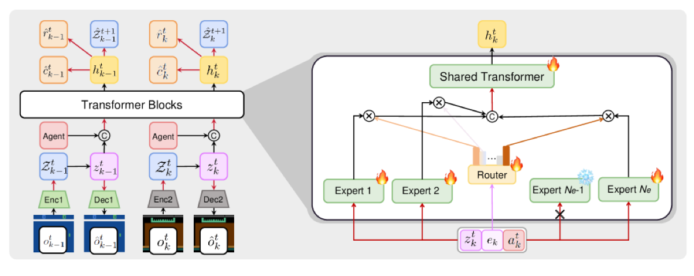

Why it matters왜 중요한가
Model-based RL is sample-efficient — but only when one model can actually capture the world. Across many visual tasks, "one world" stops fitting.
모델 기반 RL은 표본 효율이 좋지만, 그건 하나의 모델이 세계를 실제로 담아낼 수 있을 때 얘기다. 다양한 시각 과제로 가면 "하나의 세계"는 더 이상 맞지 않는다.
World models (Dreamer, STORM, IRIS) learn a compact latent of the environment and let the agent train in imagination, which is far more sample-efficient than model-free RL. But these are built for one task. Scale to many visual tasks and a single VAE + single dynamics Transformer must reconcile clashing pixels and clashing physics at once — reconstruction degrades, imagination breaks, and the authors show a multi-task STORM baseline simply fails to train. MoW's bet: keep the imagination paradigm, but make the model modular so capacity scales with task diversity instead of collapsing.
월드모델(Dreamer, STORM, IRIS)은 환경의 압축 잠재를 학습해 에이전트를 상상(imagination) 속에서 훈련시키며, 모델프리 RL보다 표본 효율이 훨씬 높다. 그러나 이들은 단일 과제용이다. 여러 시각 과제로 확장하면 하나의 VAE + 하나의 동역학 Transformer가 충돌하는 픽셀과 충돌하는 물리를 동시에 화해시켜야 하고 — 복원이 망가지고 상상이 깨진다. 실제로 저자들은 멀티태스크 STORM 베이스라인이 학습 자체에 실패함을 보인다. MoW의 베팅: 상상 패러다임은 유지하되 모델을 모듈화해, 용량이 붕괴되지 않고 과제 다양성에 따라 늘어나게 한다.

By the numbers핵심 숫자
(1 agent · 26 Atari 100k games)평균 인간정규화 점수
(단일 에이전트 · 26개 Atari 100k)
(26 task-specific models)STORM 앙상블
(과제별 26개 모델)
(972.5 MB vs 1977.5 MB)STORM 대비 파라미터
(972.5 MB vs 1977.5 MB)
(50 tasks, new SOTA)Meta-World 성공률
(50개 과제, 새 SOTA)
(15M total, vs 20–100M baselines)과제당 환경 스텝
(총 15M, 베이스라인 20–100M)
= substantial score gains전문가 수 확장
= 큰 점수 향상
Results — one model rivals an ensemble & state-based baselines결과 — 단일 모델이 앙상블·상태기반 베이스라인에 필적
| Benchmark | Method | Score | Note |
|---|---|---|---|
| Atari 100k | MoW (single) | 110.4% | 972.5 MB |
| Atari 100k | STORM (26-model ensemble) | 114.2% | 1977.5 MB |
| Meta-World | MoW (visual) | 74.5% | 15M steps |
| Meta-World | TD-MPC2 (visual) | 25.3% | same env |
In one diagram한 장의 그림
The core idea: specialize where tasks conflict, share where they agree핵심 아이디어: 과제가 충돌하는 곳은 전문화, 합의하는 곳은 공유
Modular VAEs
Instead of one encoder for all pixels, MoW uses N task-clustered categorical VAEs, each conditioned on a unit-norm task embedding eₖ. Tasks are grouped by a gradient-based clustering warmup so visually similar tasks share an encoder/decoder, preserving high reconstruction fidelity needed for latent imagination.
모든 픽셀에 단일 인코더를 쓰는 대신, MoW는 N개의 과제 군집화 범주형 VAE를 쓰고 각각을 단위노름 과제 임베딩 eₖ로 조건화한다. 과제는 그래디언트 기반 군집화 워밍업으로 묶여, 시각적으로 비슷한 과제끼리 인코더/디코더를 공유 — 잠재 상상에 필요한 높은 복원 충실도를 지킨다.
Routed experts + shared backbone
The dynamics Transformer is hybrid: a task-level router activates a TopK set of expert Transformers (annealed-temperature softmax), then a shared Transformer fuses them. Experts specialize per-task physics; the shared backbone carries common knowledge. A balance loss prevents expert collapse; a harmonious loss rescales conflicting per-task gradients.
동역학 Transformer는 하이브리드다: 과제 단위 라우터가 전문가 Transformer의 TopK 집합을 활성화(softmax 온도 어닐링)하고, 이어 공유 Transformer가 이를 융합한다. 전문가는 과제별 물리를, 공유 백본은 공통 지식을 담당. balance loss로 전문가 붕괴를 막고, harmonious loss로 충돌하는 과제별 그래디언트 스케일을 보정한다.
How it works어떻게 작동하나
- Warmup & cluster워밍업과 군집화Random rollouts fill per-task replay buffers; a single VAE-predictor stack is pretrained, then per-task gradient vectors are k-means clustered to decide which tasks share VAE / predictor / critic modules.무작위 롤아웃으로 과제별 리플레이 버퍼를 채우고 단일 VAE-예측기 스택을 사전학습한 뒤, 과제별 그래디언트 벡터를 k-means로 군집화해 어떤 과제가 VAE/예측기/critic 모듈을 공유할지 정한다.
- Encode per cluster군집별 인코딩Each observation is compressed by its cluster's categorical VAE into a stochastic latent zₜ, conditioned on the task embedding eₖ.각 관측은 해당 군집의 범주형 VAE가 확률적 잠재 zₜ로 압축하며, 과제 임베딩 eₖ로 조건화된다.
- Route & predict dynamics라우팅과 동역학 예측The router picks TopK experts from eₖ; experts + shared Transformer produce hₜ, and heads predict next-latent ẑ, reward, continuation, and an auxiliary task index k̂ (for task-discriminative features).라우터가 eₖ로 TopK 전문가를 선택, 전문가+공유 Transformer가 hₜ를 만들고, 헤드가 다음 잠재 ẑ·보상·지속과 보조 과제 인덱스 k̂(과제 변별 특징용)를 예측한다.
- Learn in imagination상상 속 학습A shared actor and per-cluster critics train entirely on imagined latent rollouts (KV-cached for speed), using λ-returns — no extra real-environment interaction for policy learning.공유 행위자와 군집별 critic이 상상된 잠재 롤아웃(속도를 위한 KV 캐싱)에서만 λ-return으로 학습 — 정책 학습에 추가 실환경 상호작용은 없다.
What to take away그래서, 가져갈 것
One agent ≈ an ensemble, at half the size. Matching a 26-model STORM ensemble with a single 50%-smaller model is the headline: modular world models can scale multi-task without exploding parameters.
단일 에이전트 ≈ 앙상블, 크기는 절반. 26개 모델 STORM 앙상블을 절반 크기의 단일 모델로 따라잡은 게 핵심 — 모듈식 월드모델은 파라미터 폭증 없이 멀티태스크 확장이 가능하다.
Dynamics specialization > perception specialization. Ablations show adding expert Transformers helps more than adding VAE clusters — the harder conflict is physics, not pixels.
동역학 전문화 > 지각 전문화. 어블레이션에서 전문가 Transformer 추가가 VAE 군집 추가보다 더 효과적 — 더 어려운 충돌은 픽셀이 아니라 물리다.
Visual MTRL from few steps is viable. 74.5% on Meta-World from pixels in 300k steps/task beats state-based baselines that need 20–100M steps — model-based imagination pays off in continuous control too.
적은 스텝의 시각 MTRL이 현실적이다. 픽셀에서 과제당 300k 스텝으로 Meta-World 74.5% — 20–100M 스텝이 필요한 상태기반 베이스라인을 능가, 연속 제어에서도 모델 기반 상상이 효과적이다.
Stability needs custom losses. Balance loss (anti-collapse) + harmonious loss (gradient rescaling) + a task-prediction head are each load-bearing — remove any and training degrades or destabilizes.
안정성은 전용 손실이 받친다. balance loss(붕괴 방지) + harmonious loss(그래디언트 재스케일) + 과제 예측 헤드가 각각 핵심 — 하나라도 빼면 학습이 저하·불안정해진다.